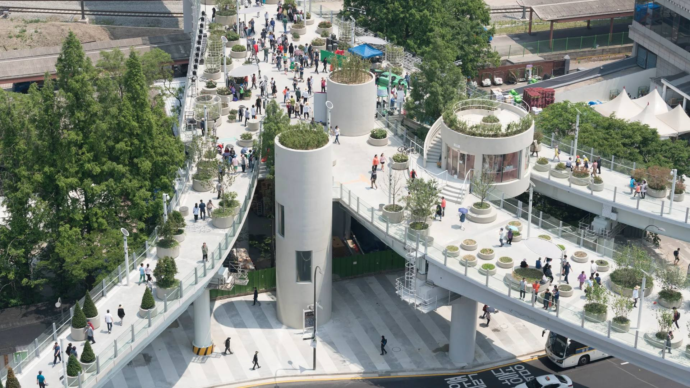

01
循证先行。
先读懂场所与人，再决定改哪里。研究区位、客群、空间使用与经营表现，并区分事实、假设和证据缺口。
六大方法策略


KYWOO STUDIO · EVIDENCE-BASED PLACEMAKING
KYWOO 为既有城市公共空间、商业空间，以及古镇文旅空间提供循证的场所营造策略。我们融合数据、空间与活动的研究和洞察，让冷清的空间重新有人气，成为有活力的城市目的地。
01
先读懂场所与人，再决定改哪里。研究区位、客群、空间使用与经营表现，并区分事实、假设和证据缺口。
六大方法策略02
面向既有的城市公共空间、商业空间与古镇文旅空间，先用好已有的街巷、节点与资源，不大拆大建。
03
用局部、灵活、可测试的介入，把策略变成人们能体验的改变；试点前后对照观察，再决定保留、调整或停止。
如何一起工作04
三者一起发力：数据看见问题，空间回应需要，活动让场所持续发生。品牌贯穿其中，帮助判断为谁服务、如何表达。
看三角动图我们关心的，是人为什么来、在哪里停留、会不会再来。
案例总览 当前项目 · 过往经验
左右滑动浏览。「当前项目」处于前期研究阶段；「过往经验」包括项目经验、JOA 建筑项目与城市更新参考，参与角色待补充。图片均非 KYWOO 项目摄影，来源见各项目说明。


项目经验
城市更新与综合发展规划
数据空间活动从区位、交通及周边产业与生活需求出发，研究片区的更新潜力。通过功能分区、塔楼布局、立体步行连接及公共景观的方案比较，整合商业、居住与社区活动，形成兼顾开发需求与场所品质的概念规划。
参与角色与项目状态待补充；照片为公开授权的场所背景照片，非团队作品摄影。
城市更新参考
基础设施再利用与公共空间连接
数据空间活动将首尔站旁的既有高架道路转化为步行花园，通过绿化、停留节点与多处楼梯、升降机及步行连桥，重新连接周边街区。项目呈现既有基础设施如何转化为日常公共空间，连接步行、休憩与城市活动。
原设计：MVRDV
MVRDV 项目资料他人完成的公开案例，用来说明思路，不是 KYWOO 的项目。
数据化表达 数据 × 空间 × 活动
移动鼠标，走近一个方向。
3D 网络为方法图解，不是实测模型；背景参考影像与真实地理数据分别标示。具体执行与活动分工按项目确认。
六大方法策略 与数据 × 空间 × 活动对应
在上方三角中选一个方向，对应的方法会亮起；每个方法右上角的小三角标出它连着哪些方向。
Place Research & Diagnostics
理解场所为什么表现不佳，以及哪些问题应优先解决。研究区位、商圈、客群、竞争、经营表现、空间使用、入口与动线，并区分事实、假设和证据缺口。
主要成果场所诊断、问题优先级、机会识别及研究依据。
数据空间活动Place Strategy & Commercial Positioning
确定场所服务谁、提供什么独特价值，以及如何形成可持续的商业路径。涵盖目标客群、场所定位、业态与功能组合、商业机制及分期策略。
主要成果定位与价值主张、业态策略、商业机制和实施路线；在数据条件允许时，加入成本、租金、空置率和 NOI 等情景测算。
数据空间活动Placemaking & Tactical Interventions
通过局部、灵活且可测试的空间介入，将策略转化为人们可以体验的改变。例如入口和街道界面改善、停留节点、临时设施与公共空间试点。
主要成果场所营造策略、重点节点概念、轻量试点与分期建议。
数据空间活动Programming & Activation Strategy
围绕人们为什么来、停留和再次到访，策划与场所定位相符的日常使用、文化内容、活动和品牌协同，而不只依赖一次性活动。
主要成果活化主题、内容与活动框架、试点计划及合作建议。
数据空间活动Impact Evaluation & Learning
在介入前建立基线，结合客流、停留、空间使用、空置率及商业表现等适用指标，评估变化并支持下一轮决策。区分指标相关性与可以证明的因果影响。
主要成果基线与阶段性评估、试点复盘及优化建议。
数据空间活动Urban, Commercial & Cultural Destination Design
面向城市街区、商业综合体、古镇和文旅目的地，组织建筑、景观、公共空间、步行动线和体验节点之间的关系，让商业活动、文化体验与公共生活共同发生。
主要成果总体空间概念、公共空间与动线策略、功能布局及重点节点设计。
数据空间活动我们看的数 到访 · 停留 · 消费
人从哪里来、什么时候来。
在哪些节点停下、停多久。
在哪里花钱、会不会再来。
试点前后对照观察这三件事，再决定保留、调整或停止；不承诺客流、租金或收益增长。
如何一起工作 诊断 · 试点 · 复盘
从场所有哪些问题开始，共同确认研究、试点与观察方式。可从一次问题梳理开始，再共同决定适合的试点范围。
交付内容与参与分工均为可讨论草案；范围、资料、权限与现场安排按项目共同确认。
确认目标、资料与现场问题。
将已有资料与现场观察放在一起，确认问题、边界与需要补充的证据。
用轻量试点，检验一个选择。
比较空间、品牌、活动与持续使用安排，在条件允许的范围内讨论一个小试点。
用观察决定，下一步怎么走。
先定观察方法，再根据使用线索与执行记录复盘，讨论保留、调整或停止。
老空间，
新人气。
MAKE SPACE LIVE
联系我们 联络与常见问题
先把问题说清楚：场所在哪里、现在怎样被使用、你希望先改善什么？
场所与位置： 目前的使用情况： 希望改善的问题： 已有资料与可观察线索：
邮箱链接会打开你的邮件程序；也可先复制对话提纲。本页不收集或提交资料。
聚焦已有基础、希望重新找到问题与使用机会的城市公共空间、商业空间与古镇文旅空间。是否适合介入，需要先了解场所状况。
可以。先确认目标、资料与现场条件，再讨论一个节点或一次轻量介入。范围、分工与观察口径按实际项目共同确认。
「案例总览」里，「当前项目」朱家角与武林银泰处于前期研究阶段（朱家角研究汇报需访问密码），不是已交付的委托。「过往经验」中，「项目经验」是过往项目介绍，参与角色与项目状态待补充；「JOA 建筑项目」来自 JOA（justopenarch.com），KYWOO 团队成员的参与角色待补充；「城市更新参考」是他人完成的公开案例。图片均非 KYWOO 项目摄影，来源见各项目说明与“素材与披露”。武林银泰地理图使用 Overture 建筑与道路数据，楼层动画是通用 DEMO。
先从资料与现场观察提出问题，再比较空间与活动的候选方向，最后用试点和复盘修正判断。品牌可贯穿空间与活动；不把未经验证的空间潜力当作实测客流。
围绕项目问题组织品牌、空间与数据分析、活动策划等工作，先明确范围与交付内容，再确定协作分工。过往项目如用于介绍，会注明参与角色与项目状态；个人过往经验不直接等同于 KYWOO 的完成实绩。
移动鼠标可走近节点并预览内容，点击可固定；按「返回总览」或 Escape 回到全图。「暂停动效」可停止漂浮和粒子；手机通过点选操作。公开版为静态地理预览；交互地图仅在本机研究版提供。城市、空间、决策在同一导览中切换；空间章节为通用楼层示范，可选楼层及返回导览。手机与减少动态模式以手动切换为主。
不会。当前页面未连接财务数据，也不会播放动态收益结果。空间比较只用于说明工作方法，不构成投资、租赁或运营承诺。


.jpg){kind=link}
.jpg){kind=link}